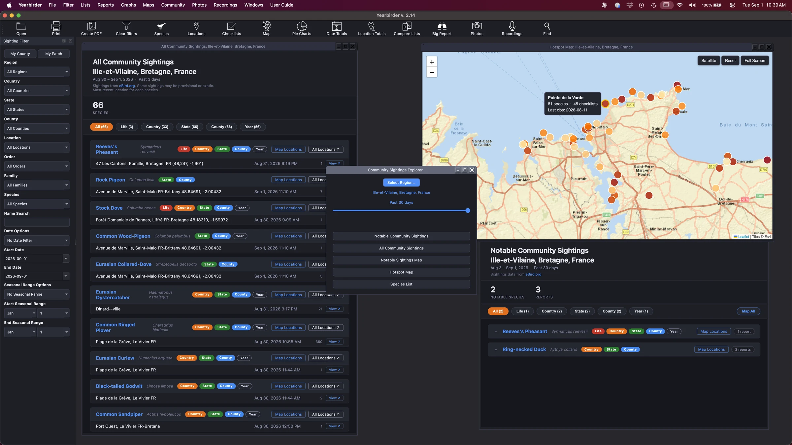
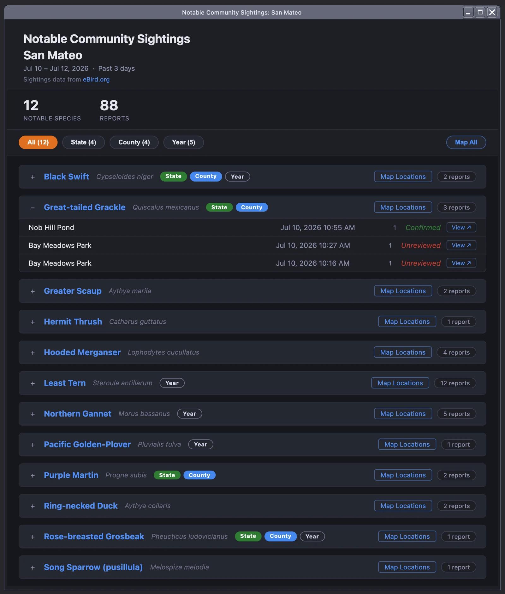
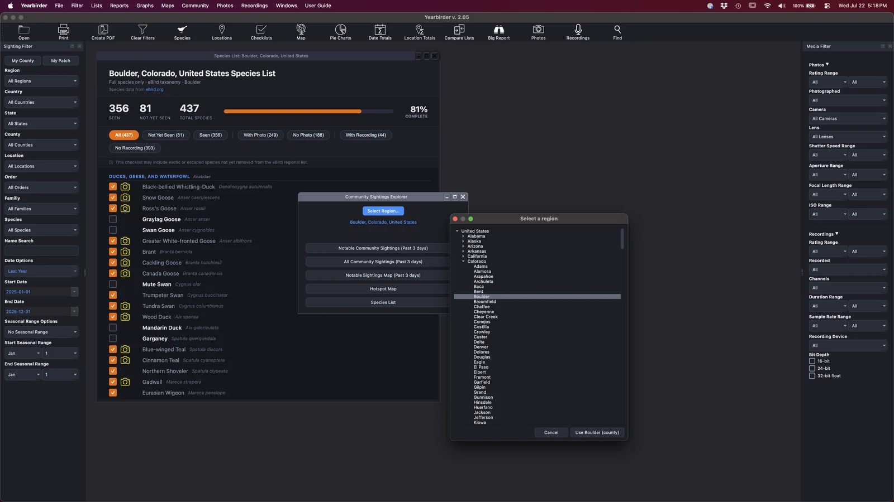
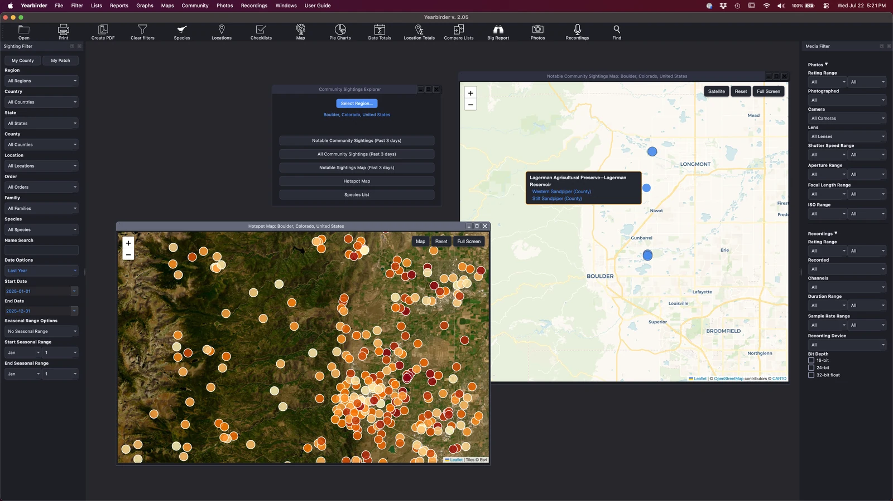

Yearbirder's community reports pull live data from eBird's servers so you can see what's being seen anywhere in the world. Color-coded badge bubbles instantly flag Life, State, County, and Year firsts relative to your own data, so you always know which birds matter most to you.

Community sightings with Life, State, County, and Year firsts flagged against your own records.
The Notable Community Sightings report surfaces the rare and unusual species eBird has flagged in your region recently — with badge bubbles that tell you at a glance which would be a Life, State, County, or Year first for you.

Browse every species recently reported in any country, state, or county — not just your own. The Community Sightings Explorer turns eBird's live data into a species list you can scan, with the same firsts-relative-to-you color coding to help you plan.

Put the community's sightings on the map, color-coded the same way, so you can see exactly where your next life or county bird is turning up. Hotspot maps show the productive birding locations around you, wherever you are.
